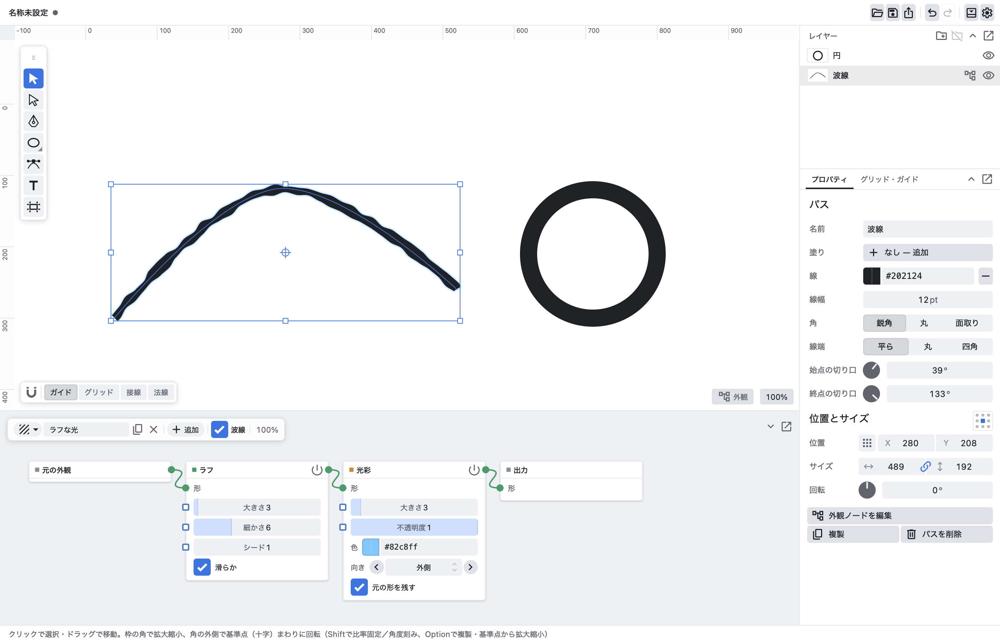
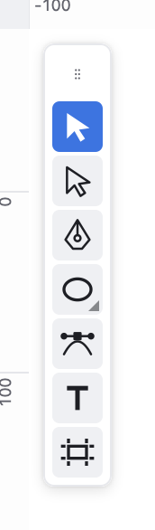
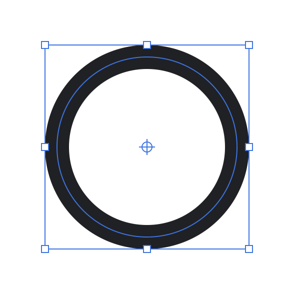
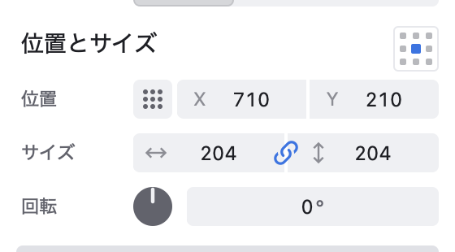
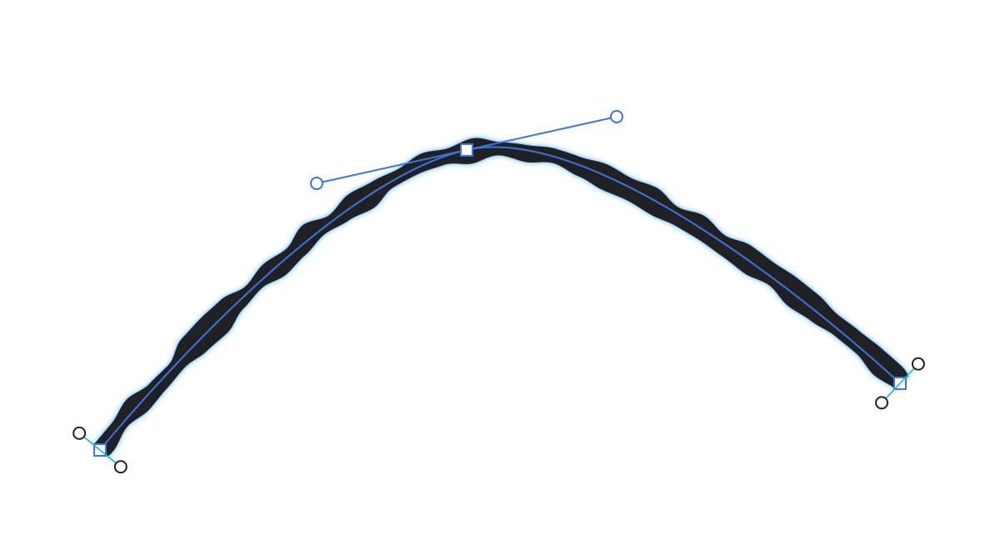
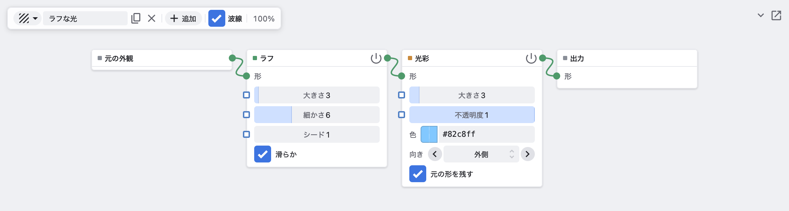
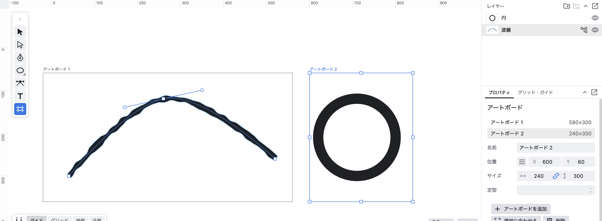
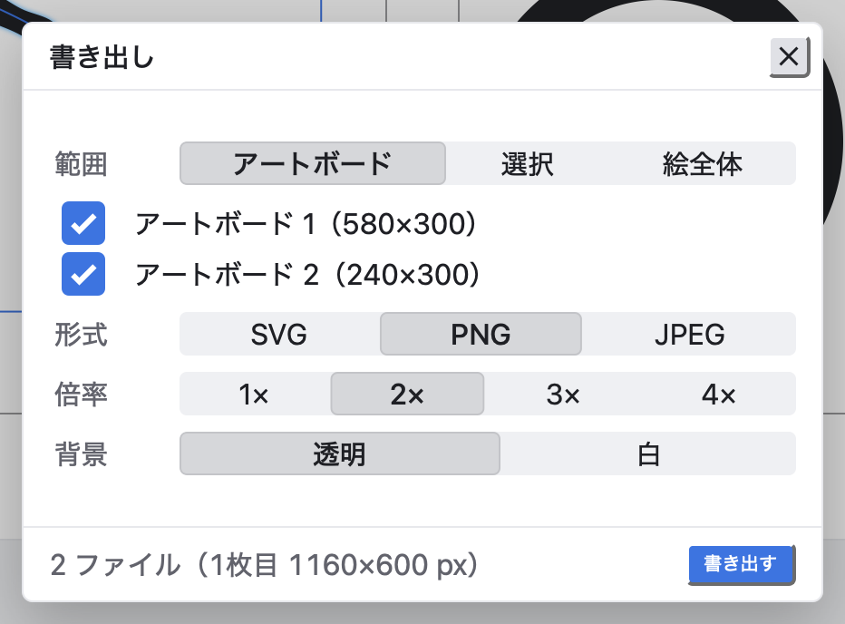

いつでも直せる
太さ・切り口・角丸・図形の寸法・ブレンドの段数・外観ノードの値は、作ったあとから変えられます。取り消し（⌘Z）は操作1回ごとに1段です。
はじめに
PathWeaver は、太さが場所ごとに変わる線を描いて、その見た目をノードで重ねていく Mac 用のベクター描画アプリです。線の太さ・切り口の角度・角の丸みは、描いたあとでもいつでも直せます。
太さ・切り口・角丸・図形の寸法・ブレンドの段数・外観ノードの値は、作ったあとから変えられます。取り消し（⌘Z）は操作1回ごとに1段です。
ラフ・光彩・ハーフトーンなどの効果は、パスを変えずに「外観」として上から重ねます。外観は他のパスと共有したり、ライブラリに保存して別のファイルで使えます。
はじめに

どのパネルも見出しの ⌄ でたたみ、「切り離す」で浮かせられます。CtrlSpace でポインターの下のエリアだけを大きく表示します（もう一度押すと戻る）。
作る

| クリック | 角のアンカーを置く |
| ドラッグ | 曲線のアンカー（ハンドルを引き出す） |
| 最初の点をクリック | パスを閉じる |
| Enter / Esc | 描き終える（開いたパスのまま） |
| Shift＋クリック・ドラッグ | 角度を刻む（既定 15°。前の点からの向き・ハンドルの向き） |
| 線分の上をクリック | その場所にアンカーを足す |
| Shift＋既存のパスをクリック | そのパスの上から描き始める。次の点は法線方向に吸着 |
パレットの図形ボタンをもう一度押す（または右クリック）と一覧が出ます：長方形・角丸長方形・楕円・多角形・スター・直線・円弧・スパイラル・長方形グリッド・同心円グリッド。できるのは普通のパスなので、そのままアンカーを直せます。
| ドラッグ | 描く。クリックだけなら標準の大きさ |
| Shift | 縦横同じ（直線は角度刻み） |
| Option | 中心から描く |
| ドラッグ中に ↑ ↓ | 多角形の辺・スターの頂点・スパイラルの数 |
| 描いた直後の左下のパネル | 寸法・角丸・辺の数・分割数などを変えると同じ図形を作り直す（取り消しは1回のまま）。別の操作をすると閉じて、ただのパスになる |
| クリックして打つ | クリックした所が1行目の基準線。日本語入力もそのまま使えます |
| Esc / ほかをクリック | 確定。空なら何も残らない |
| 選択ツールで文字をダブルクリック | 打ち直す |
| 右パネル | フォント（検索できる）・サイズ・行送り |
| ⇧⌘O | アウトライン化（ただの形になり、打ち直せなくなる） |
文字の形にも塗り・線・外観ノードがそのまま効きます。
作る
| クリック / Shift＋クリック | 選ぶ / 追加・外す。空いた所からドラッグで範囲選択 |
| ドラッグ | 移動。Option で複製しながら移動、Shift で縦横に固定 |
| 枠の四角をドラッグ | 拡大縮小。Shift で比率を保つ、Option で基準点から |
| 枠の角のすぐ外をドラッグ | 基準点を中心に回転。Shift で角度を刻む |
| 矢印キー | 1ずつ動かす（Shift で10） |
| 右クリック | カット・コピー・複製・重ね順・ガイド化・フォルダ・ブレンドなどのメニュー |


位置・サイズ・回転は「基準点」を軸に変わります。最初は中心です。
| 右パネル「位置とサイズ」の右の9つの点 | 基準点を選ぶ。位置 X/Y はこの点の座標になる |
| キャンバスの十字をドラッグ | 好きな所へ動かす（9点の近くでは吸い付く）。パスや角の四角と重なっているときは ⌘ を押しながら |
| 十字をダブルクリック | 中心に戻す |
| 右パネルの「回転」つまみ | 基準点を中心に回す。回し終わると 0 に戻る |
位置とサイズは、外観ノードの効果を含まない「パスそのものの形（線幅込み）」で測ります。
| アンカー・ハンドルをドラッグ | 形を直す。Shift でハンドルの角度を刻む |
| 線分を Option＋クリック / ダブルクリック | アンカーを足す |
| Delete | 選んだアンカーを消す（アンカーを選んでいないときはパスを消す） |
| アンカーポイントツールでクリック / ドラッグ | 角にする / スムーズにする。ハンドルのドラッグは片側だけ動く |
| ⌘C ⌘X ⌘V | コピー・カット・ペースト。外観は独立した複製になる |
| ⌘D / Option＋ドラッグ | 複製。外観は共有されたまま（片方を変えるともう片方も変わる） |
作る
ダイレクト選択・ペン・アンカーポイントのツールでは、線の両側にオレンジの太さのつまみが出ます（設定で常時表示をオフにでき、そのときは ⌘ を押している間だけ出ます）。

| つまみをドラッグ | 両側を同じ量だけ太く・細く（左右の差は保つ） |
| Option＋ドラッグ | その側だけ |
| ⌘＋芯をクリック | そこに幅点を足す（いまの太さの流れのまま） |
| ⌘＋幅点をドラッグ | 幅点を芯に沿って動かす |
| 幅点を選んで Delete | 幅点を消す |
| 右パネル | 太さ・左だけ・右だけ・方向を数値で |
| ⌘＋端点をドラッグ | 切り口の角度を回す |
| 右パネル「始点の切り口」「終点の切り口」 | 角度のつまみで直接 |
| 右パネル「線端」 | 平ら・丸・四角 |
| 右パネル「角」 | 鋭角・丸・面取り（パス全体の角のつなぎ方） |
| ダイレクト選択で角の内側の丸いつまみをドラッグ | その角だけ角丸の半径を変える（生きた角丸） |
| つまみを Option＋クリック | 角丸の種類を切り替える：円弧・クロソイド・面取り |
作る
| 右パネルの「塗り」「線」 | 色見本と16進の欄。「なし — 追加」で付ける、− でなしにする |
| 色見本をクリック | 色のパレット（色の面・色相・プリセット） |
| 色見本をドラッグ | その場で色の面が出て、離すと決まる。ドラッグ中に H S V R G B で動かす成分を切り替え |
数値の欄はどれも、左右にドラッグして値を変えられます。Option で1/10の細かさ、Shift で10倍。クリックすれば数字や式を打てます。
作る
パスを選んで下のノードエディターで「追加」（または ShiftA）すると、元の外観 → ノード → 出力 の形で外観が始まります。パスの形は変えずに、見た目だけを作ります。

| ShiftA | 追加メニュー（打てば検索）。選んだノードはポインターに付いてきて、クリックで置く。リンクの上に置けば間に入る |
| 出力のソケットから線を引いて空白で離す | 追加メニュー。選んだノードはその線につながる |
| ノードをリンクの上にドラッグ | 間に挿入 |
| Ctrl＋ノードをドラッグ | リンクから外す（前後はつなぎ直す） |
| Option＋右ドラッグ | 2つのノードを自動でつなぐ |
| Ctrl＋右ドラッグ | なぞったリンクを切る |
| G / ShiftD / X | つかんで動かす / 複製 / 削除 |
| CtrlX | ノードを消して前後をつなぐ |
| M / ノードの電源ボタン | そのノードだけ止める（バイパス） |
| CtrlShift＋ノードをクリック | そのノードの結果をキャンバスに表示（表示だけ。保存・書き出しは最終出力のまま）。上に「表示中」が出る。同じノードか × で戻る |
| ノードバーのチェック | このパスの外観を全部オン・オフ |
| キャンバス右下の「外観」 | 全部のパスの外観を表示だけオフ（重いときに）。ファイルと書き出しは変わらない |
| レイヤー一覧の外観の行 | 目のマークでノードごと・外観ごとにオン・オフ |
| ノードバー左の外観の ▾ | このファイルの外観・ライブラリから選ぶ。選んでいるパス全部に1つの共有された外観としてかかる |
| 使っている数（2 など）を押す | このパス専用の複製にする |
| 「ライブラリに保存」「書き出す…」 | 外観を別ファイル（.pwn）にして、ほかの書類でも使う |
数値の出力を、ほかのノードの値のソケットにつなぐと、その値を動かせます。
形のノードとラスターのノードは自由につなげます。形をラスターのノードにつなぐと自動で画像になり、画像を形のノードにつなぐと自動でトレースされます。ノードの値のバーは「ふだん使う範囲」を表し、バーの先までドラッグし続けたり、もっと大きな数を打ったりもできます。
まとめる
| ⌘G / ⇧⌘G | 選んだパスをフォルダにまとめる / 解除。何も選んでいなければ空のフォルダ |
| 行をドラッグ | 重ね順を変える・フォルダへ出し入れ（フォルダの中にフォルダも置ける） |
| 行をダブルクリック | 名前を変える |
| 目のマーク | 表示・非表示（非表示は書き出されない） |
| 右クリック →「重ね順」 | 最前面・前面・背面・最背面 |
| 定規からキャンバスへドラッグ | ガイドを引く。定規へ戻すと消える |
| ⌘5 / ⌥⌘5 | 選んだパスをガイドにする / 戻す（細い線で表示され、書き出されない） |
| 吸着バー（キャンバス左下） | ガイド・グリッド・接線・法線に吸着するか |
| ⌘' / ⌘; | グリッドを表示して吸着 / ガイドに吸着 |
| ドラッグ中に Ctrl | 一時的に吸着しない |
| 右パネルの「グリッド・ガイド」タブ | グリッドの間隔、Shift で刻む角度 |
まとめる
2本以上選ぶと右パネルに6つのボタン：合体・前面で型抜き・背面で型抜き・交差・中マド・分割。前後は重ね順で決まり、外観は焼き込まれます。
2つのパスの間に段（標準5）を作ります。端の形・色・太さを変えると間も作り直されます。段数は右パネル。解除は ⌥⇧⌘B、「拡張」で普通のパスになります。
まとめる
| ⇧⌘P / ファイルをキャンバスへドロップ / 画像をペースト | SVG と画像（PNG・JPEG・HEIC など）を配置 |
| SVG | 形は編集できるパスに、文字は打ち直せる文字に。ファイル名のフォルダに入り、1回で取り消せる |
| 画像：右パネル「不透明度」 | 透かす |
| 画像：右パネル「抜き」 | 黒：暗いところほど透ける（光や炎の素材、Unmult）。白：白い紙が透けて線だけ残る（スキャンした線画）。元の画素はそのまま |
| 画像：右パネル「下絵にする」 | なぞるための画像に。書き出されず、キャンバスでは選ばれない（レイヤー一覧から選ぶ） |
まとめる


| 空いた所をドラッグ | アートボードを作る。いくつでも置ける |
| 中をドラッグ / 枠の四角をドラッグ | 移動 / 大きさ |
| Delete | 選んでいるアートボードを消す |
| 右パネル | 一覧、名前・位置・サイズ、定型（A4・はがき・1920×1080 など）、「追加」「選択に合わせる」 |
| 範囲 | アートボード（チェックしたものを1枚ずつ）・選択・絵全体。選択と絵全体は光彩などの効果まで含めた広さ |
| 形式 | SVG・PNG・JPEG |
| 倍率 | 1×〜4×（1単位を何ピクセルにするか）。下に出来上がりのピクセル数 |
| 背景 | 透明・白（JPEG は白） |
| 保存先 | 1ファイルなら保存パネル、複数ならフォルダを選ぶ。名前は「ファイル名-アートボード名」 |
参照
| ピンチ / ⌘＋スクロール | 拡大縮小 |
| スクロール / Space＋ドラッグ / 中ボタン | 動かす |
| ⌘0 / F | 全体を表示 |
| ⌘1 / 右下の倍率をクリック | 100% |
| ⌘+ / ⌘− | 拡大 / 縮小 |
| ⌥⌘N | ノードパネルを表示 / 隠す |
| ⌘, | 設定：ズームの速さと向き、ホイール（移動 / ズーム）、テーマ、作品の背景、太さのつまみの常時表示 |
参照
| V | 選択 |
| A | ダイレクト選択 |
| P | ペン |
| ⇧C | アンカーポイント |
| M L \ | 長方形・楕円・直線 |
| T | 文字 |
| ⇧O | アートボード |
| ⌘N ⌘O | 新規・開く |
| ⌘S ⇧⌘S | 保存・別名で保存 |
| ⇧⌘P ⌘E | 配置・書き出し |
| ⌘Z ⇧⌘Z | 取り消し・やり直し |
| ⌘A Esc | すべて選択・選択解除 |
| ⌘D Delete | 複製・削除 |
| ⌘G ⇧⌘G | フォルダにまとめる・解除 |
| ⇧⌘O | アウトライン化 |
| ⌥⌘B | ブレンドを作成 |
| ⌘5 | ガイドにする |
参照
使う前に知っておくと困らないことです。どれも今後の改善の候補です。